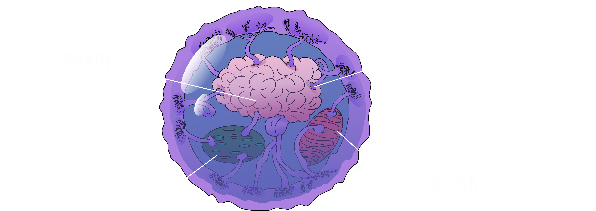

Hi! I'm a space intergalactic conductor URM-450.
Cosmos is a specific space; its conditions are not suitable for homo sapiens. Let's analyze the main person’s problems in the cosmos and how to solve them.
*UMR - unmanned robotic machine
First, you will feel nauseous for a while.
The vestibular system begins to work worse without gravity than with it, so at first cosmonauts feel something similar to seasickness.

Bones decay faster in space.
Bone density in weightlessness decreases by more than 1% per month.
Vision deteriorates in space.
Swelling of the upper body puts pressure on the eyes. This can cause vision problems.
The heart becomes smaller.
In weightlessness, the heart no longer has to work as hard to pump blood throughout the body. Over time, this can lead to a decrease in its size.
In space, people receive 10 times more radiation than on Earth.
All these factors indicate one thing - ordinary homo sapiens cannot survive in space without auxiliary measures.
There are some animals on Earth that, in theory, could exist/adapt to such harsh conditions, such as Tardigrada [lat. Tardigrada]
But now I suggest you take a look at a creature that perfectly survives in the distant spaces of space.
? ? ?
Meet the Bubble Brain, a resident of an extraterrestrial environment.
